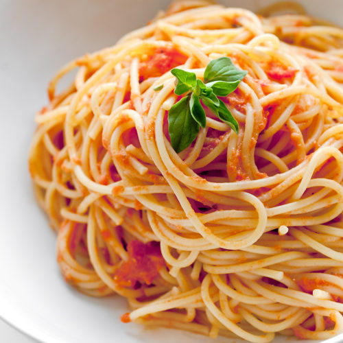

Pasta Sauce - Rossini's Marinara

Ingredients
- 3 cloves garlic, chopped
- 1/2 medium onion, chopped
- 1 28 oz. can of crushed tomatoes
- 1 tsp. oregano
- 1/4 tsp. parsley, chopped
- Salt and pepper, to taste
Steps
- Brown the garlic lightly and sauté the onions together in olive oil for 5-10 minutes.
- Add tomatoes, salt, pepper, oregano, and parsley.
- Cook slowly, simmering and uncovered about 30-45 minutes.
- Add water if it becomes too thick.
Assembly
- Serve hot over cooked pasta, such as linguini or spaghetti.
- Recipe can be doubled or tripled and frozen. Cook longer for larger batches.
Note: this recipe is from a friend’s Uncle Rossini. Because tomato sauces made with canned tomatoes tend to be acidic, try adding a 1/4 tsp or more of sugar.
Also, having reviewed a number of popular recipes, many people add between 2-8 tbsp. of extra virgin olive oil depending on the size of the recipe. Some also add a bit of red pepper flakes.
Source
Reddit